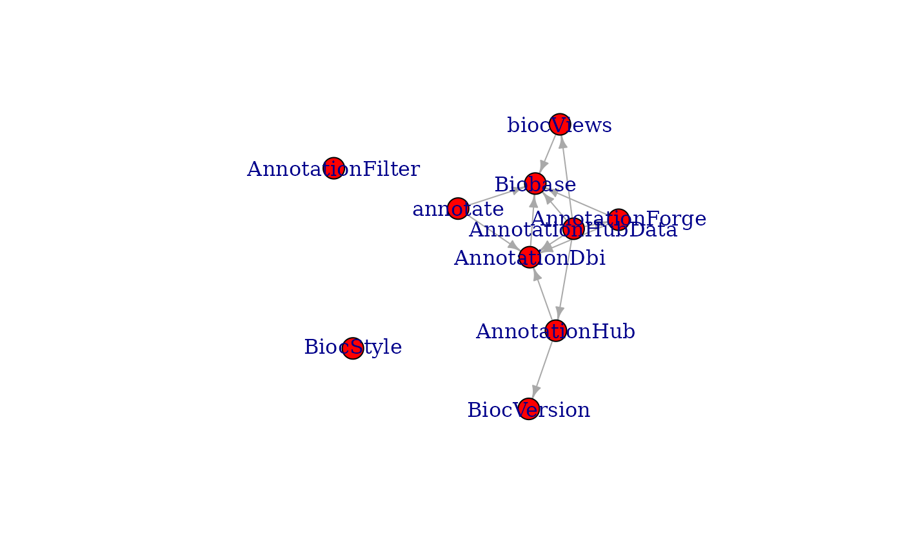
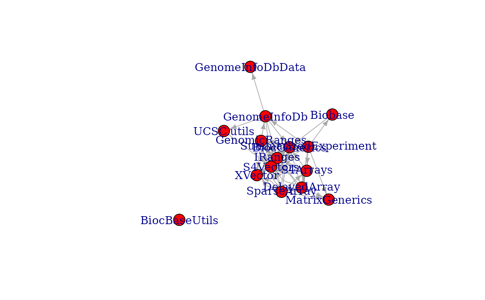

R/buildPkgDependencyGraph.R
inducedSubgraphByPkgs.RdFind the subgraph induced by including specific packages. The induced subgraph is the graph that includes the named packages and all edges connecting them. This is useful for a developer, for example, to examine her packages and their intervening dependencies.
inducedSubgraphByPkgs(g, pkgs, pkg_color = "red")an igraph graph, typically created by
buildPkgDependencyIgraph
character() vector of packages to include. Package names not included in the graph are ignored.
character(1) giving color of named packages. Other packages in the graph that fall in connecting paths will be colored as the igraph default.
library(igraph)
g <- buildPkgDependencyIgraph(buildPkgDependencyDataFrame())
#> 'getOption("repos")' replaces Bioconductor standard repositories, see
#> 'help("repositories", package = "BiocManager")' for details.
#> Replacement repositories:
#> CRAN: https://cran.rstudio.com
## subgraph of only the first 10 packages maintained by Bioconductor
biocmaintained <- head(biocMaintained()[["Package"]], 10L)
#> 'getOption("repos")' replaces Bioconductor standard repositories, see
#> 'help("repositories", package = "BiocManager")' for details.
#> Replacement repositories:
#> CRAN: https://cran.rstudio.com
g2 <- inducedSubgraphByPkgs(g, pkgs = biocmaintained)
g2
#> IGRAPH e796622 DN-- 10 13 --
#> + attr: name (v/c), color (v/c), edgetype (e/c)
#> + edges from e796622 (vertex names):
#> [1] annotate ->AnnotationDbi annotate ->Biobase
#> [3] AnnotationDbi ->Biobase AnnotationForge ->AnnotationDbi
#> [5] AnnotationForge ->Biobase AnnotationHub ->AnnotationDbi
#> [7] AnnotationHub ->BiocVersion AnnotationHubData->AnnotationDbi
#> [9] AnnotationHubData->AnnotationForge AnnotationHubData->AnnotationHub
#> [11] AnnotationHubData->Biobase AnnotationHubData->biocViews
#> [13] biocViews ->Biobase
V(g2)
#> + 10/10 vertices, named, from e796622:
#> [1] annotate AnnotationDbi AnnotationForge AnnotationHub
#> [5] AnnotationHubData Biobase AnnotationFilter BiocStyle
#> [9] biocViews BiocVersion
plot(g2)

## subgraph of a package's strong Bioconductor package dependencies
maedeps <- unlist(pkgBiocDeps(
"MultiAssayExperiment", which = "strong",
recursive = TRUE, only.bioc = TRUE
), use.names = FALSE)
#> 'getOption("repos")' replaces Bioconductor standard repositories, see
#> 'help("repositories", package = "BiocManager")' for details.
#> Replacement repositories:
#> CRAN: https://cran.rstudio.com
g3 <- inducedSubgraphByPkgs(g, pkgs = maedeps)
plot(g3)

## same subgraph with networkD3::forceNetwork
library(networkD3)
#>
#> Attaching package: ‘networkD3’
#> The following object is masked from ‘package:htmlwidgets’:
#>
#> JS
wt <- cluster_walktrap(g3)
members <- membership(wt)
ndg3 <- igraph_to_networkD3(g3, group = members)
forceNetwork(
Links = ndg3$links, Nodes = ndg3$nodes, Source = 'source',
Target = 'target', NodeID = 'name', Group = 'group', zoom = TRUE,
linkDistance = 200, fontSize = 20, opacity = 0.9, opacityNoHover = 0.9
)